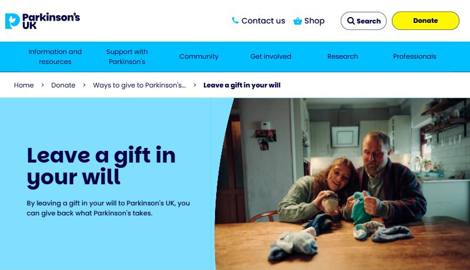

Give back what Parkinson’s takes
Providing content strategy to our Legacy team and an external agency

FromBrand guidelines, a style guide and a tone of voice
ToA national TV advert, landing page and social copy in the charity’s voice
The problem
A Legacy team that were subject matter experts on gifts in wills and legacy donations. And an external agency who knew how to create a stunning, impactful TV advert. But they needed someone to tie the refreshed tone of voice and style guide through the TV advert, the webpage messaging and the social media copy.
My approach
I worked with a project manager and creative delivery teams from our in-house Studio to make sure the Legacy team and the external agency were following our guidelines.
We built in multiple rounds of feedback, albeit with much tighter timelines than I’m used to in the charity space. This required prioritising this project over other work due to the impact it was going to have on people with Parkinson’s now, and long into the future.
The outcome
A flagship TV advert, landing page and storyteller experiences that use consistent tone of voice and branding, leading to long-tail legacy fundraising.